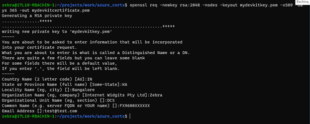
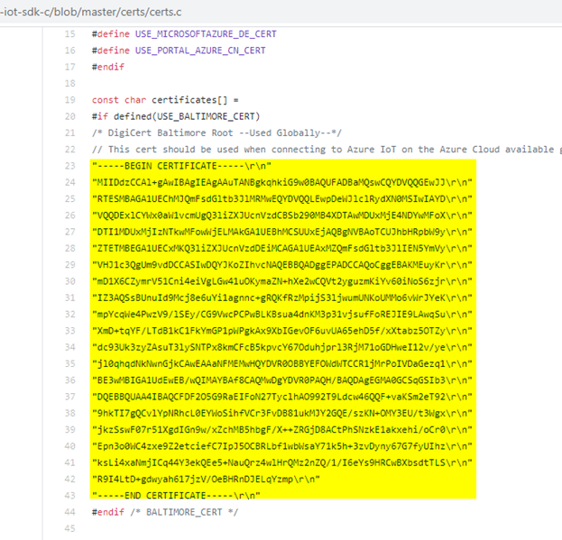
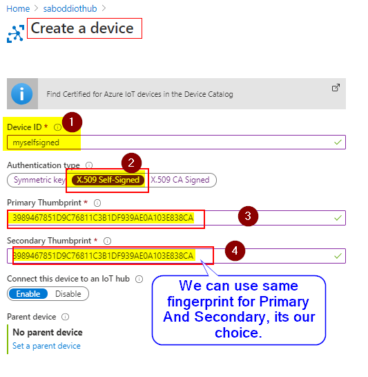

Azure IoT Hub Setup¶
This page guide user to setup Azure free acount with IoT Hub and Create a device under Hub.
Create device self-signed certificates¶
Generate the IoT device’s x509 Certificate and the Private Key Certificate by using the below OpenSSL command from a PowerShell window or Linux terminal
Open PowerShell or Linux terminal and navigate to your desired working directory and run the following command.
$ openssl req -newkey rsa:2048 -nodes -keyout mydevkitkey.pem -x509 -days 365 -out mydevkitcertificate.pem
mydevkitkey.pem: is a Private Key.
mydevkitcertificate.pem: is the actual x509 certificate file.sample code is shown below:

Capture the x509 certificate Fingerprint either
SHA1orSHA256type.SHA1:
$ openssl x509 -in mydevkitcertificate.pem -fingerprint -noout.
SHA256:
$ openssl x509 -in mydevkitcertificate.pem -fingerprint -noout -sha256
Important
Copy the fingerprint hexadecimal number with 40 lengths [for SHA1 type].
Remove the
:from the fingerprint and it will look as shown below.3989467851D9C76811C3B1DF939AE0A103E838CA
Copy the Microsoft DigiCert Baltimore Root cert as
ca.pemfile - used globally. Make sure to remove the double quotes and the line feeds.
Create the new IoT Hub and Add device to Azure Portal - IoT Hub¶
Create an Azure account following the steps mentions @ https://azure.microsoft.com/en-in/free/ (Ignore this step if already have account).
Login to Azure Portal.
Create an IoT hub using the steps mentioned in @ https://docs.microsoft.com/en-us/azure/iot-hub/iot-hub-create-through-portal
Create Device.
For
Device IDuse the reader hostname or the Common name used while generating certificate.Select x.509 self-signed as authentication type.
For
Primary Thumbprintuse fingerprint generated Create device self-signed certificates.